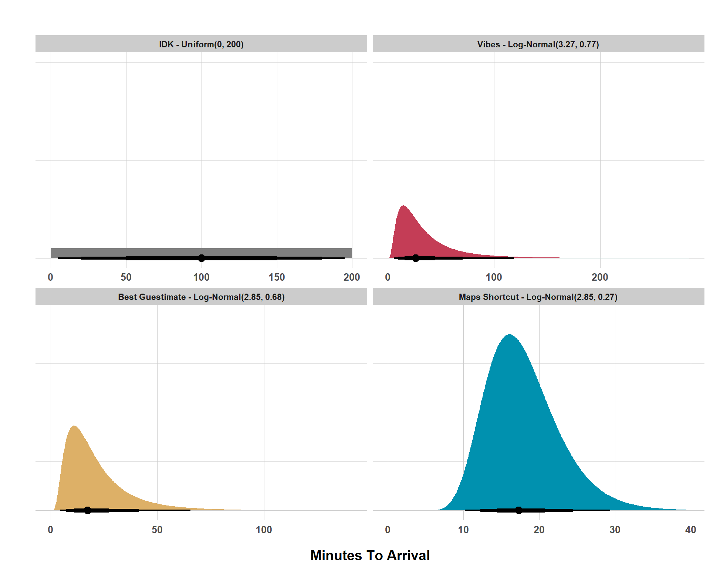
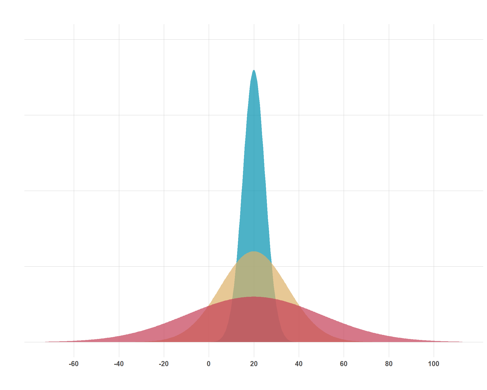
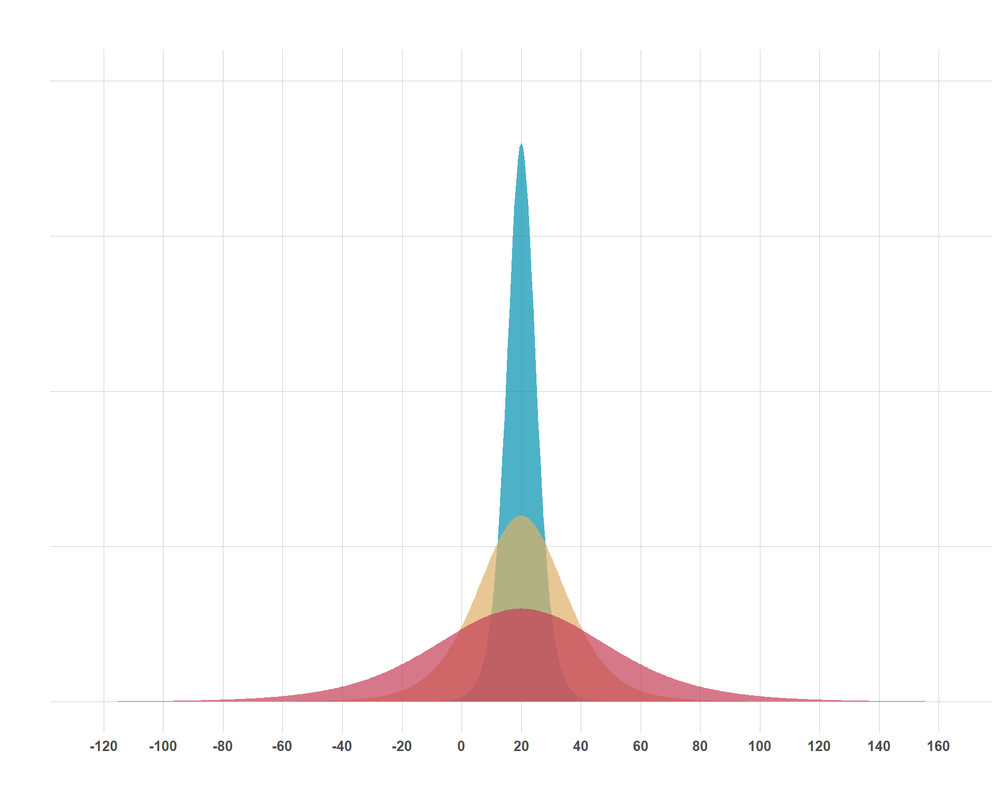
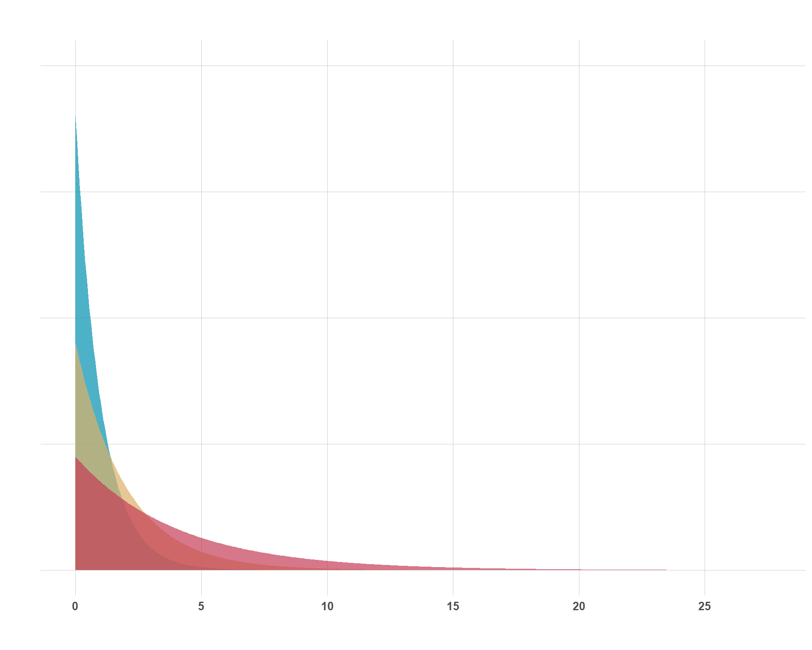
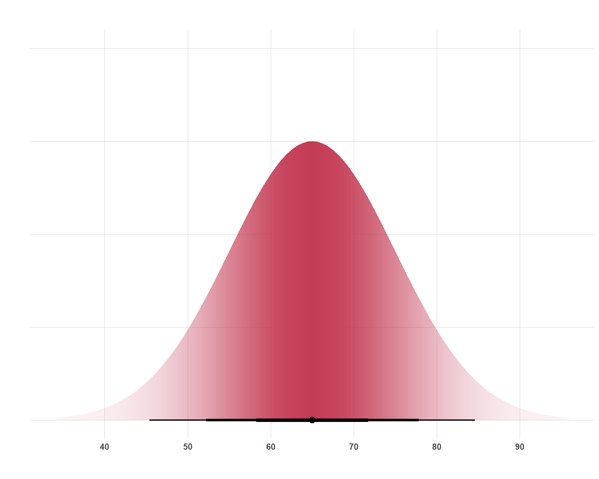
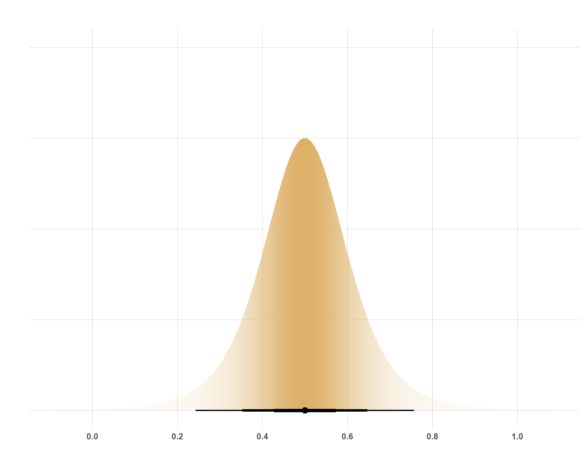
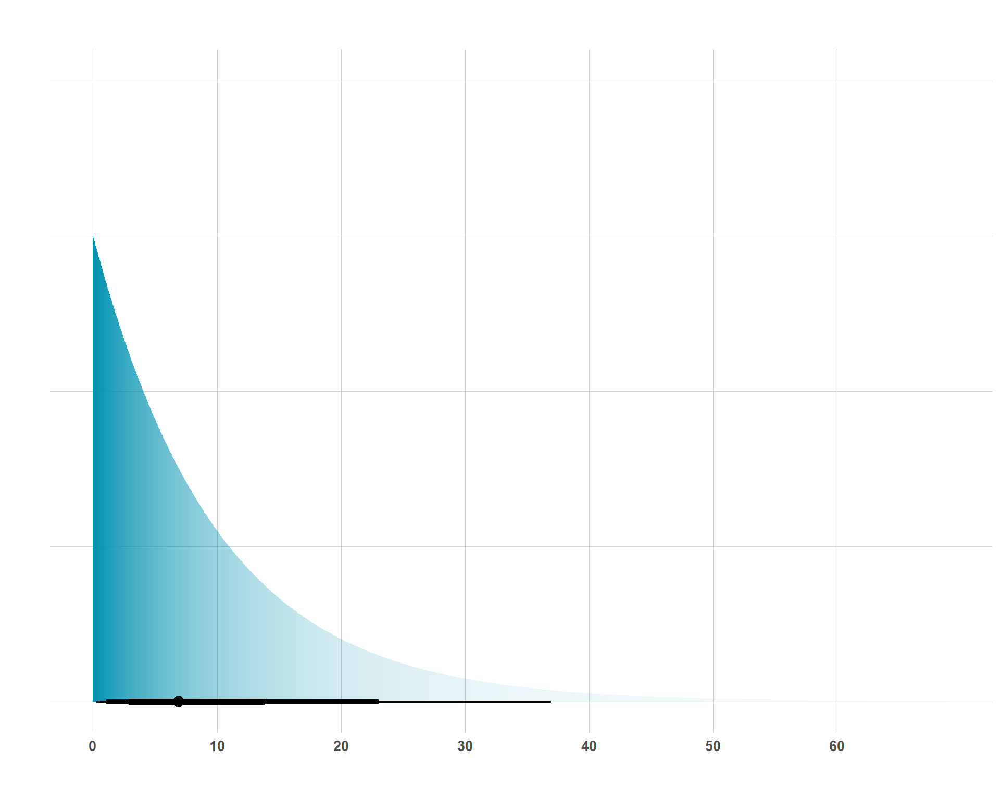
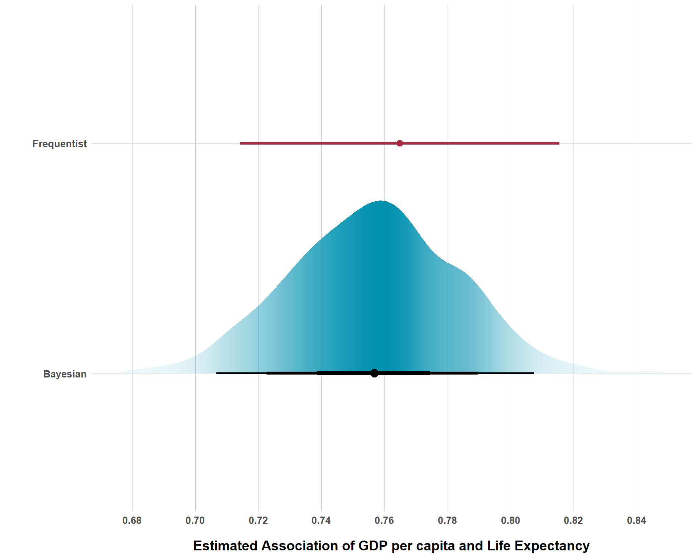

pacman::p_load(
"dplyr", # Data Manipulation
"ggplot2", # Data Visualization
"forcats", # Factors
"ggdist", # Plotting Distributions
"brms", # Bayesian Modeling
"tidybayes", # Bayesian Visualization
"forcats", # Factors
install = FALSE
)
# Define a Custom Theme
blog_theme <- function() {
theme_bw() +
theme(
panel.grid.major = element_line(color = "gray80", size = 0.3),
panel.grid.minor = element_blank(),
panel.border = element_blank(),
plot.background = element_rect(fill = "white", color = NA),
plot.title = element_text(face = "bold", size = 16, margin = margin(t = 0, r = 0, b = 15, l = 0)),
axis.title.x = element_text(face = "bold", size = 14, margin = margin(t = 15, r = 0, b = 0, l = 0)),
axis.title.y = element_text(face = "bold", size = 14, margin = margin(t = 0, r = 15, b = 0, l = 0)),
strip.text = element_text(face = "bold"),
axis.text.x = element_text(face = "bold", size = 10),
axis.text.y = element_text(face = "bold", size = 10),
axis.ticks.x = element_blank(),
axis.ticks.y = element_blank(),
strip.background = element_rect(fill = "grey80", color = NA),
legend.title = element_text(face = "bold", size = 14),
legend.text = element_text(face = "bold", size = 10, color = "grey25"),
)
}
# Establish a Custom Color Scheme
colors <- c(
"#0a697d",
"#0091af",
"#ddb067",
"#c43d56",
"#ab2a42",
"gray50"
)Getting Comfortable with Expressing Beliefs as Distributions
bayes
visualization
Thinking about our beliefs as distributions is not super intuitive for most people, which creates a stumbling blog for getting into Bayesian statistics. Check this blog out to break down the mystique!
Intro
I think that one of the more intimidating things about Bayesian statistics is just how much thinking you have to do before even running a model. I remember my first couple of semesters in grad school, writing out OLS and logit models in Stata, not really knowing what I was doing at all, and thinking to myself “wow, this sure is easy!”. But, given how pervasive the problem of “garbage can” models are, perhaps running statistical models should not be as easy as a line or two of code, hitting “run” and getting results back 3 seconds later.
A great things about Bayesian statistical modeling is that (if you’re doing it honestly) it forces you to do some upfront thinking about your model before you even get any results. But this “thinking” is not always the most intuitive, specifically when it comes to figuring out what priors you are going to use. Understanding why priors are important and helpful isn’t so hard to grasp, but thinking about beliefs about parameters of a model in terms of distributions is not very intuitive for a lot of people (that was for sure the case with me!)
Before Continuing…
If you don’t really know what I’m talking about so far, then I would imagine you’re not very familiar with Bayesian statistics and, if my assumption is correct, it’s probably worth checking out some introductory resources before continuing with this blog. I wrote a somewhat intro-friendly (although not comprehensive) blog but this free online book is also really good if you have the time. You don’t need to be an expert by any means for this blog, just know the basics of Bayesian statistics and what priors are.
Beliefs as Distributions
Learning Bayesian statistics sort of re-framed how I view everything with uncertainty in life. For example, I’ve found (much to the dismay of much of my family and friends) that “I don’t know” responses rarely are as uninformative as they sound.
Say that I’m planning to get lunch with a friend and I show up on time, but my friend is going to get there late. I text my friend and ask “hey, what time do you think you’ll be here?”. My friend responds, “I don’t know”. Well great, that’s extremely unhelpful. I ask them what’s the hold-up. They respond that they left their house late and that they are in traffic. Let’s say that I know where they live (15 miles away from the restaurant) and so, even though the severity of traffic is a bit variable, I know that there are some values that are basically impossible, like my friend being 2 hours late.
But I probe for more information. “Can you give me a time frame?”, I ask. “I don’t know”, they reply. “I’m maybe 20 minutes away, give or take 10 minutes, depending on whether or not I catch a break. But this traffic is really bad, so maybe it gets worse”. So now I’ve got a time frame at least to work with. Most likely, my friend will arrive in 20 minutes, but I shouldn’t think that my friend arriving in 10 minutes or 30 minutes is unreasonable either.
Finally, I receive another text that says, “Google Maps re-directed me to a shortcut to avoid traffic. I’ll be there in 20 minutes”. Great, I can expect my friend to get to the restaurant in 20 minutes with a good degree of confidence, but obviously, there’s probably a little bit of uncertainty anyways. For example, Maps could also be directing other drivers to take the short-cut, which could create a bit of traffic as well.
For this simple realistic scenario, I went through 4 different states of belief that can be expressed as the distribution seen below.
Code
# Set Prior Assumptions for 4 Different Expectations
lunch_priors <- c(
prior(uniform(0, 200)),
prior(lognormal(3.27, 0.77)),
prior(lognormal(2.85, 0.68)),
prior(lognormal(2.85, 0.27))
)
# Get a Data Frame of Distribution Data
lunch_priors_df <- lunch_priors |>
parse_dist() |>
mutate(prior = case_when(
prior == "uniform(0, 200)" ~ "IDK - Uniform(0, 200)",
prior == "lognormal(3.27, 0.77)" ~ "Vibes - Log-Normal(3.27, 0.77)",
prior == "lognormal(2.85, 0.68)" ~ "Best Guestimate - Log-Normal(2.85, 0.68)",
prior == "lognormal(2.85, 0.27)" ~ "Maps Shortcut - Log-Normal(2.85, 0.27)"
)) |>
mutate(prior = fct_inorder(prior))
ggplot(lunch_priors_df, aes(y = 0, dist = .dist, args = .args)) +
stat_halfeye(point_size = 3, aes(slab_fill = prior),
point_interval = median_qi, .width = c(0.95, 0.80, 0.50),
interval_size_range = c(0.75, 2), show.legend = FALSE) +
facet_wrap(~ prior, scales = "free_x") +
scale_fill_manual(values = colors[c(6, 4, 3, 2)], aesthetics = "slab_fill", guide = "none") +
labs(x = "Minutes To Arrival", y = "", title = "") +
scale_y_continuous(labels = NULL) +
blog_theme()
Don’t fret too much about the parameters of the distributions right now (the numbers in the parentheses). Focus instead on how the distributions of possible beliefs change with different information. If someone says “I don’t know” then we’re working with nothing. Any possible value is as likely as any other (I arbitrarily set a range of values from 0 to 200 minutes but “I don’t know” really means any value from -\(\infty\) to \(\infty\) has the same probability of being true as any other value in that range).
However, leveraging background knowledge, I was able to form a more realistic and informative range of possible values, with the bulk of my belief being that my friend would show up somewhere in the 2-50 minutes range, but I still allow for a very long right tail, meaning I don’t rule it out that my friend could be very late. Now that’s super wide but, when I got the information that they thought they were roughly 20 minutes away, give or take 10 minutes, the distribution compresses and we get closer to a 15-35 minutes range, still though, there is a long right tail, so I’m not ruling out a very late arrival. Finally, with more concrete information that I can be more certain of (a Google Maps estimate), I can make the distribution of beliefs much tighter and be confident that my friend will arrive in 15-25 minutes or so.
Some Helpful Distributions to Know
Now that we’ve reviewed the intuition behind expressing beliefs as distributions, I’ll do a very quick review of some common distributions (again, this is by no mean’s exhaustive) and present what they look like, the parameters that define the distribution, and real-world examples in which you might use these distributions as priors for Bayesian statistical modeling.
Normal Distribution
This is the one that everybody knows, although they might call it other things (i.e. a “bell curve” or a Gaussian Distribution). The normal distribution peaks at its mean and is symmetrical on either side around its mean. 68% of the data falls within 1 standard deviation of the mean and 95% of the data falls within 2 standard deviations. The distribution is an attractive one because of the simplicity of its parameters and it’s assumption-lite properties in the sense that we don’t have have to think much about skewness or values not being allowed to go above or below a certain value.
Code
normal_priors <- c(
prior(normal(20, 30)),
prior(normal(20, 15)),
prior(normal(20, 5))
)
normal_priors_df <- normal_priors |>
parse_dist() |>
mutate(prior = fct_inorder(prior))
ggplot(normal_priors_df, aes(y = 0, dist = .dist, args = .args)) +
stat_slab(alpha = 0.7, aes(slab_fill = prior)) +
scale_fill_manual(values = colors[c(4, 3, 2)], aesthetics = "slab_fill", guide = "none") +
labs(x = "", y = "", title = "") +
scale_x_continuous(breaks = seq(-60, 100, by = 20)) +
scale_y_continuous(labels = NULL) +
blog_theme()
Above are three normal distributions who all share a mean of 20, but the uncertainty of 20-ish values varies by distribution. The mean (\(\mu\)) and the standard deviation (\(\sigma\)) are the two parameters that determine the shape of the normal distribution. These are concepts that even the general public are pretty familiar with, so it makes interpreting the distribution pretty easy for most folks. For each of these distributions, the parameters can be interpreted as:
\(\mathcal{N}(20, 30)\)
- Mean of 20 and 68% of the data is within 20 \(\pm\) 30 and 95% of the data is roughly within 20 \(\pm\) 60. This is the red distribution.
\(\mathcal{N}(20, 15)\)
- Mean of 20 and 68% of the data is within 20 \(\pm\) 15 and 95% of the data is roughly within 20 \(\pm\) 30. This is the yellow distribution.
\(\mathcal{N}(20, 5)\)
- Mean of 20 and 68% of the data is within 20 \(\pm\) 5 and 95% of the data is roughly within 20 \(\pm\) 10. This is the blue distribution.
Student’s t-Distribution
The Student’s-t distribution (pictured below) at first glance doesn’t really seem any different from the normal distribution. After all, its highest point is its mean (\(\mu\)), it is symmetric around \(\mu\) and it is scaled by \(\theta\). So what is different about this? Well, take a look at the range of values on the x-axis. Then, eyeball it and look at how much is covered under the tails of each distribution. This is what differentiates the normal distribution from the Student-t distribution; its heavy tails, which are established by the \(\nu\).
Code
student_priors <- c(
prior(student_t(7, 20, 30)),
prior(student_t(7, 20, 15)),
prior(student_t(7, 20, 5))
)
student_priors_df <- student_priors |>
parse_dist() |>
mutate(prior = fct_inorder(prior))
ggplot(student_priors_df, aes(y = 0, dist = .dist, args = .args)) +
stat_slab(alpha = 0.7, aes(slab_fill = prior)) +
scale_fill_manual(values = colors[c(4, 3, 2)], aesthetics = "slab_fill", guide = "none") +
labs(x = "", y = "", title = "") +
scale_x_continuous(breaks = seq(-120, 160, by = 20)) +
scale_y_continuous(labels = NULL) +
blog_theme()
So, why might you use this distribution in the first place if it is so similar to the normal distribution? Primarily, you might consider using the Student-t distribution if you are modeling something that you assume to follow a normal distribution, but your sample size is small and, accordingly, you lack the confidence to rule out the more extreme values that a normal distribution would naturally rule out. You can modify how heavy the tails are by manipulating \(\nu\). The larger you set \(\nu\), the tails get thinner and there is less of an allowance for extreme values.
Exponential Distribution
In my opinion, the exponential distribution is a bit trickier to understand than the normal or Student-t distributions, but it is nonetheless very important and you’ll encounter it often in Bayesian statistical modeling. The simple part of the exponential distribution is its single parameter, \(\lambda\) (although sometimes you will see \(\beta\) instead which is just 1 / \(\lambda\)). Below, I show a plot of three different exponential distributions with \(\lambda\) getting progressively larger.
Code
exponential_priors <- c(
prior(exponential(0.25)),
prior(exponential(0.5)),
prior(exponential(1))
)
# You Could Also Do This
# exponential_priors <- c(
# prior(exponential(1/4)),
# prior(exponential(1/2)),
# prior(exponential(1/1))
# )
exponential_priors_df <- exponential_priors |>
parse_dist() |>
mutate(prior = fct_inorder(prior))
ggplot(exponential_priors_df, aes(y = 0, dist = .dist, args = .args)) +
stat_slab(alpha = 0.7, aes(slab_fill = prior)) +
scale_fill_manual(values = colors[c(4, 3, 2)], aesthetics = "slab_fill", guide = "none") +
labs(x = "", y = "", title = "") +
scale_x_continuous(breaks = seq(0, 25, by = 5)) +
scale_y_continuous(labels = NULL) +
blog_theme()
I think two big questions are appropriate to answer for this distribution; 1) why would I use it? and 2) what values should I plug in for \(\lambda\)? Regarding the former, note that there are no negative values for these distributions. That is important. You could consider the exponential distribution to model anything that cannot be negative. A little bit of a sneak peak into the next section is that an exponential prior is appropriate for \(\sigma\) in a linear regression because the model’s uncertainty/noise cannot be negative. While there are other distributions that do not allow for negative values, the exponential distribution has the nice feature of concentrating much of its mass around smaller values, which leads to the second question…
What should \(\lambda\) be? On a simple matter, the higher that \(\lambda\) is, more concentration of values are clustered towards 0 and larger values are tolerated less. Substantively, you can set \(\lambda\) to be 1 / \(\sigma\) (standard deviation of \(Y\) given the covariates included in the model, assuming you’re using the exponential distribution as a prior for a model’s residual uncertainty). Much like other priors, this is an assumption that you set and it’s one that you have to sit down and think about. If you’re not comfortable with a tighter exponential prior, you can always just set \(\lambda\) to 1, which still allows for a lot of noise if the data is adamant about that. Remember, that’s a great thing about priors… you’re allowed to be unsure, just make sure to be transparent about it.
Linear Regression Example
Demonstrating a common application of thinking about beliefs as distributions, I think it makes sense/is helpful to walk through an example with Bayesian linear regression where we can cover priors for the intercept, coefficients, residual variance, model notation, interpretation, etc. But first, we need data to work with. Usually, I’d simulate some data, but, while simulated data is helpful for stuff like evaluating how well a model performs, rooting this in some concrete examples/data is probably more helpful than dealing with abstract variables like (my favorites) \(X\), \(Y\), \(Z_1\), \(Z_2\), etc. So I am going to be basic and we are going to be working with the very simplistic gapminder data set. Our goal is to look at how GDP per capita (\(\beta_1\)) is associated with life expectancy (\(Y\)).
library(gapminder)
data(gapminder)
gap <- gapminder
head(gap, 10)# A tibble: 10 × 6
country continent year lifeExp pop gdpPercap
<fct> <fct> <int> <dbl> <int> <dbl>
1 Afghanistan Asia 1952 28.8 8425333 779.
2 Afghanistan Asia 1957 30.3 9240934 821.
3 Afghanistan Asia 1962 32.0 10267083 853.
4 Afghanistan Asia 1967 34.0 11537966 836.
5 Afghanistan Asia 1972 36.1 13079460 740.
6 Afghanistan Asia 1977 38.4 14880372 786.
7 Afghanistan Asia 1982 39.9 12881816 978.
8 Afghanistan Asia 1987 40.8 13867957 852.
9 Afghanistan Asia 1992 41.7 16317921 649.
10 Afghanistan Asia 1997 41.8 22227415 635.We start building our Bayesian linear regression model by specifying a prior for the intercept. It makes little sense to assume that our regression line should start at 0 since any country throughout all of history has never had a life expectancy of literally zero. Instead, let’s use a normal distribution centered around the average life expectancy from our data and allow a good degree of variance around this mean because the life expectancy in places like Western Europe are going to be quite different from places like Sub-Saharan Africa. And it’s also going to vary over time (yes, this would normally be a good place to use multilevel models, but that is not for this blog)… This prior could be expressed like this:
\(\beta_0 \sim \text{Normal}(65, 10)\)
Which means that our intercept follows a normal distribution with a mean of 65 years but about 95% of the prior mass is within \(\pm\) 20 years around the mean. Likewise, it also means that about 68% of the prior mass is within \(\pm\) 10 years around the mean.
- Coefficients
Next, we need to set a prior for our association between GDP per capita and life expectancy. Importantly, unless I am trying to do causal analysis, I should not think about my prior as “my best guess for the effect of GDP per capita on life expectancy”. Instead, I need to think about how much I think life expectancy moves when GDP per capita moves. Obviously, these two things are very correlated. As societies become wealthier, people live longer. For the purposes of thinking about the scale of the prior more intuitively, I am going to convert GDP per capita to GDP per capita in thousands of dollars. That way, I can say things like “I expect that, when GDP per capita goes up by $1,000, life expectancy increases by X (instead of when GDP per capita goes up by 1 dollar because the likely associated change in life expectancy would probably be super small).
gap <- gap |>
mutate(gdpPercap = gdpPercap / 1000)I think that something like “when GDP per capita (in thousands of dollars) increases by 1 unit ($1,000) that life expectancy pretty strongly follows. Perhaps something like 0.5 years. And I feel pretty strongly about that. To be precise, I feel pretty strongly that life expectancy goes up by 0.5 years-ish. Like, I wouldn’t be shocked if the actual increase was 0.4 years or 0.6 years or something like that. In fact, I feel so strongly that I just about know that there is no negative association, but I’m open-minded that the association is actually much larger than 0.5 years. I could use a distribution that totally excludes negative values, but it’s not the case that it’s impossible for the association to be negative, just super duper unlikely. Because of that, I am going to use a Student’s t-distribution, even though that’s not exactly right because I don’t think far-left negative ends of the tail are as likely as far-right positive ends of the tail, but close enough. So, I can express the prior for the coefficient like this:
\(\beta_1 \sim \text{Student}(5, 0.5, 0.1)\)
Lastly, I need to think about the amount of residual variance that remains if all I include in this model to predict life expectancy is GPD per capita. Here, I’ll stick with my assumptions that the standard deviation of life expectancy is 10 years (as I assumed with the intercept.) Accordingly, if I divide 1 / 10, I get \(\lambda\), so I will be setting:
\(\sigma \sim \text{Exponential}(0.1)\)
- Plotting the Priors
And now, I can plot these three priors and we can get an idea of what they actually look like and see if they’re reasonable. Here’s the prior for our intercept:
Code
model_priors <- c(
prior(normal(65, 10), class = Intercept),
prior(student_t(5, 0.5, 0.1), class = b, coef = gdpPercap),
prior(exponential(0.1), class = sigma)
)
model_priors_df <- model_priors |>
parse_dist() |>
mutate(prior = fct_inorder(prior))
model_priors_df |>
filter(prior == "normal(65, 10)") |>
ggplot(aes(y = 0, dist = .dist, args = .args)) +
stat_halfeye(
aes(
slab_alpha = after_stat(pdf),
slab_fill = prior
),
fill_type = "segments",
.width = c(0.95, 0.80, 0.50),
interval_size_range = c(0.75, 2),
scale = 0.75,
point_size = 3,
show.legend = FALSE
) +
scale_fill_manual(
values = colors[4],
aesthetics = "slab_fill",
guide = "none"
) +
scale_slab_alpha_continuous(range = c(0.05, 1)) +
scale_x_continuous(breaks = seq(30, 90, by = 10)) +
scale_y_continuous(labels = NULL) +
labs(
x = "",
y = "",
title = ""
) +
blog_theme()
And the prior for \(\beta_1\):
Code
model_priors_df |>
filter(prior == "student_t(5, 0.5, 0.1)") |>
ggplot(aes(y = 0, dist = .dist, args = .args)) +
stat_halfeye(
aes(
slab_alpha = after_stat(pdf),
slab_fill = prior
),
fill_type = "segments",
.width = c(0.95, 0.80, 0.50),
interval_size_range = c(0.75, 2),
scale = 0.75,
point_size = 3,
show.legend = FALSE
) +
scale_fill_manual(
values = colors[3],
aesthetics = "slab_fill",
guide = "none"
) +
scale_slab_alpha_continuous(range = c(0.05, 1)) +
scale_x_continuous(breaks = seq(0, 1, by = 0.2)) +
scale_y_continuous(labels = NULL) +
labs(
x = "",
y = "",
title = ""
) +
blog_theme()
And lastly, the prior for \(\sigma\):
Code
model_priors_df |>
filter(prior == "exponential(0.1)") |>
ggplot(aes(y = 0, dist = .dist, args = .args)) +
stat_halfeye(
aes(
slab_alpha = after_stat(pdf),
slab_fill = prior
),
fill_type = "segments",
.width = c(0.95, 0.80, 0.50),
interval_size_range = c(0.75, 2),
scale = 0.75,
point_size = 3,
show.legend = FALSE
) +
scale_fill_manual(
values = colors[2],
aesthetics = "slab_fill",
guide = "none"
) +
scale_slab_alpha_continuous(range = c(0.05, 1)) +
scale_x_continuous(breaks = seq(0, 60, by = 10)) +
scale_y_continuous(labels = NULL) +
labs(
x = "",
y = "",
title = ""
) +
blog_theme()
On a quick visual inspection, everything looks good. Now that we’re set with our priors, we can formally write our model out as the following:
\[ \begin{aligned} \text{Life Expectancy} &\sim \text{Normal}(\mu, \sigma) \\ \mu &= \beta_0 + \beta_1 \, \text{GDP per capita} \\ \beta_0 &\sim \text{Normal}(65, 10) \\ \beta_1 &\sim \text{Student}(5, 0.5, 0.1) \\ \sigma &\sim \text{Exponential}(0.1) \end{aligned} \] And now we can actually fit our Bayesian model and see how it compares to a standard frequentist model.
Code
# Bayesian Model
mod_fit <- brm(
data = gap,
family = gaussian,
formula = lifeExp ~ gdpPercap,
prior = model_priors,
chains = 4, cores = 4, iter = 1000,
seed = 1234, backend = "cmdstanr",
)Running MCMC with 4 parallel chains...
Chain 1 Iteration: 1 / 1000 [ 0%] (Warmup)
Chain 1 Iteration: 100 / 1000 [ 10%] (Warmup)
Chain 1 Iteration: 200 / 1000 [ 20%] (Warmup)
Chain 1 Iteration: 300 / 1000 [ 30%] (Warmup)
Chain 1 Iteration: 400 / 1000 [ 40%] (Warmup)
Chain 1 Iteration: 500 / 1000 [ 50%] (Warmup)
Chain 1 Iteration: 501 / 1000 [ 50%] (Sampling)
Chain 1 Iteration: 600 / 1000 [ 60%] (Sampling)
Chain 1 Iteration: 700 / 1000 [ 70%] (Sampling)
Chain 1 Iteration: 800 / 1000 [ 80%] (Sampling)
Chain 1 Iteration: 900 / 1000 [ 90%] (Sampling)
Chain 1 Iteration: 1000 / 1000 [100%] (Sampling)
Chain 2 Iteration: 1 / 1000 [ 0%] (Warmup)
Chain 2 Iteration: 100 / 1000 [ 10%] (Warmup)
Chain 2 Iteration: 200 / 1000 [ 20%] (Warmup)
Chain 2 Iteration: 300 / 1000 [ 30%] (Warmup)
Chain 2 Iteration: 400 / 1000 [ 40%] (Warmup)
Chain 2 Iteration: 500 / 1000 [ 50%] (Warmup)
Chain 2 Iteration: 501 / 1000 [ 50%] (Sampling)
Chain 2 Iteration: 600 / 1000 [ 60%] (Sampling)
Chain 2 Iteration: 700 / 1000 [ 70%] (Sampling)
Chain 2 Iteration: 800 / 1000 [ 80%] (Sampling)
Chain 2 Iteration: 900 / 1000 [ 90%] (Sampling)
Chain 2 Iteration: 1000 / 1000 [100%] (Sampling)
Chain 3 Iteration: 1 / 1000 [ 0%] (Warmup)
Chain 3 Iteration: 100 / 1000 [ 10%] (Warmup)
Chain 3 Iteration: 200 / 1000 [ 20%] (Warmup)
Chain 3 Iteration: 300 / 1000 [ 30%] (Warmup)
Chain 3 Iteration: 400 / 1000 [ 40%] (Warmup)
Chain 3 Iteration: 500 / 1000 [ 50%] (Warmup)
Chain 3 Iteration: 501 / 1000 [ 50%] (Sampling)
Chain 3 Iteration: 600 / 1000 [ 60%] (Sampling)
Chain 3 Iteration: 700 / 1000 [ 70%] (Sampling)
Chain 3 Iteration: 800 / 1000 [ 80%] (Sampling)
Chain 3 Iteration: 900 / 1000 [ 90%] (Sampling)
Chain 3 Iteration: 1000 / 1000 [100%] (Sampling)
Chain 4 Iteration: 1 / 1000 [ 0%] (Warmup)
Chain 4 Iteration: 100 / 1000 [ 10%] (Warmup)
Chain 4 Iteration: 200 / 1000 [ 20%] (Warmup)
Chain 4 Iteration: 300 / 1000 [ 30%] (Warmup)
Chain 4 Iteration: 400 / 1000 [ 40%] (Warmup)
Chain 4 Iteration: 500 / 1000 [ 50%] (Warmup)
Chain 4 Iteration: 501 / 1000 [ 50%] (Sampling)
Chain 4 Iteration: 600 / 1000 [ 60%] (Sampling)
Chain 4 Iteration: 700 / 1000 [ 70%] (Sampling)
Chain 4 Iteration: 800 / 1000 [ 80%] (Sampling)
Chain 4 Iteration: 900 / 1000 [ 90%] (Sampling)
Chain 4 Iteration: 1000 / 1000 [100%] (Sampling)
Chain 1 finished in 0.1 seconds.
Chain 2 finished in 0.1 seconds.
Chain 3 finished in 0.0 seconds.
Chain 4 finished in 0.1 seconds.
All 4 chains finished successfully.
Mean chain execution time: 0.1 seconds.
Total execution time: 0.4 seconds.Code
# Extract Bayesian Info from the Model
bayes_draws <- mod_fit |>
spread_draws(b_gdpPercap)
bayes_df <- bayes_draws |>
rename(estimate = b_gdpPercap) |>
mutate(model = "Bayesian")
# Frequentist Model
freq_mod_fit <- lm(lifeExp ~ gdpPercap, data = gap)
# Extract Frequentist Estimate and Confidence Intervals
freq_ci <- confint(freq_mod_fit)["gdpPercap", ]
freq_est <- coef(freq_mod_fit)["gdpPercap"]
freq_df <- tibble(
model = "Frequentist",
estimate = freq_est,
lower = freq_ci[1],
upper = freq_ci[2]
)
ggplot(bayes_df, aes(x = estimate, y = model)) +
stat_halfeye(
aes(slab_alpha = after_stat(pdf)),
.width = c(0.95, 0.80, 0.50),
interval_size_range = c(0.75, 2),
point_interval = median_qi,
fill = colors[2],
fill_type = "segments",
show.legend = FALSE,
scale = 0.75
) +
geom_pointinterval(
data = freq_df,
aes(x = estimate, y = model, xmin = lower, xmax = upper),
color = colors[5],
size = 6
) +
scale_x_continuous(breaks = seq(from = 0.68, to = 0.88, by = 0.02)) +
scale_slab_alpha_continuous(range = c(0.05, 1)) +
labs(
x = "Estimated Association of GDP per capita and Life Expectancy",
y = ""
) +
blog_theme()
As we can see, the results are very similar, but it appears our Bayesian model is ever so slightly more conservative than our frequentist model, a feature of our priors. It’s notable, however, that the data appears quite strong, as the coefficient for GDP per capita is 0.76 whereas our prior mean for the association was 0.5. But, with that being said, what’s the point in learning to think about beliefs expressed as distributions if the results look so similar? Why not just take the easy route and run frequentist models?
Well, first of all, they won’t always look this similar. After all, this is a super simple teaching example. But, even when they do appear similarly, the Bayesian results provide superior interpretation and visual communication. Not only does the Bayesian estimate simply look pretty, we can also assign probabilistic interpretations to different values. For example, we can say that there is a 95% chance that the association between GDP per capita and life expectancy is between 0.71 and 0.81. The frequentist confidence interval cannot provide such an interpretation. Seriously, I wish anyone luck explaining what the 95% confidence interval actually says to a group of non-technical stakeholders in a manner that does not compromise what the confidence interval actually says and satisfies stakeholders.
Another reason why the Bayesian approach is worth it arises when we’re trying to make causal inferences. Especially for the social sciences, where hundreds of things impact the outcome of interest in varying effect sizes, Bayesian priors are great for regularization. In many cases, due to poor modeling decisions, including variables in a model that should not be included or excluding variables that should be included, we can get crazy effect sizes that are obviously wrong but, if the data is tortured enough, it will say what is says, regardless of how far from the truth it is. Recognizing our limitations, priors can be great for regularizing our estimates towards something much more likely true. Again, this won’t always be the case. But scientists should generally be conservative before making a claim such as “X has a super strong effect on Y”. Priors utilize existing knowledge to prevent such whacky claims from surfacing from tortured data lone. Learning how to frame your prior beliefs as distributions is, for this reason alone, a very powerful skill to develop.